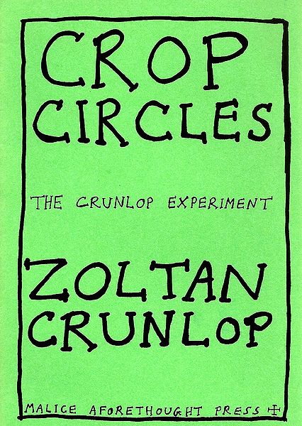

Sunday, August the 15th, 2010
back to: title, date or indexes
Twenty years ago, under the Malice Aforethought Press imprint, Mr Key published an important pamphlet by Professor Zoltan Crunlop regarding crop circles. It is, of course, out of print, although one lengthy sentence from it was abstracted and recycled as a helpful brain-strengthening tool, available in the Archives here.

Out of the blue, a letter from the Professor arrived today, sent from the St Blodwyn Mercy Home For Decrepit Cerealogists.
Dear Mr Key, he writes, or rather scratches with a crabbed nib, As you know I am a man of science, and that being the case, I revise my theories in the light of new evidence. Much as I would like to stand by every last syllable in that important pamphlet I wrote for you twenty years ago, I fear I can no longer do so. On no account must you ever allow it to be reissued, although god knows I could do with the royalties, as it is costing me an arm and a leg to maintain some form of comfort here in good old Saint Blodwyn's. My morning bowl of gruel has already been reduced to a morning half-a-bowl of gruel, and some of my cushions have been taken away. Oh, listen to me, groaning and moaning! That is not what this letter is about. The thing is, you see, that what I never considered, when I was writing my important pamphlet all those years ago, was the very real possibility that all crop circles are created by twelve Belgian lace-making nuns. Why didn't I think of that? In spite of the fact that my eyesight is fast failing, everything now seems clear to me. Of course, of course, it was nuns all along! Passionately yours, Zoltan.
I am pleased we have cleared that one up.